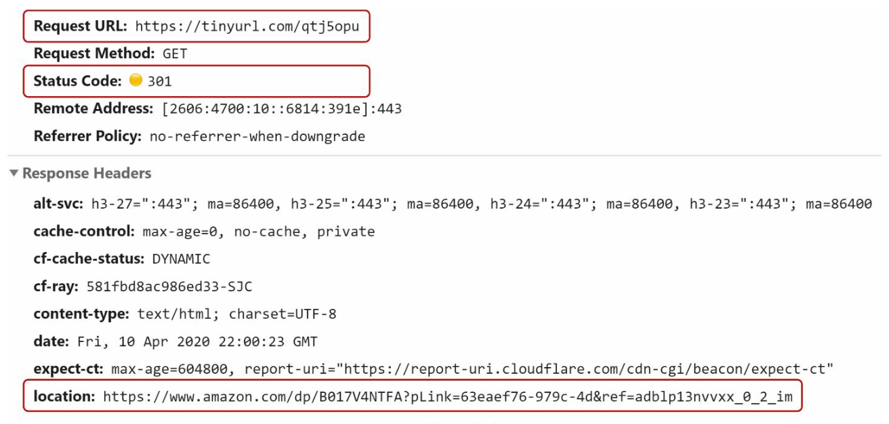
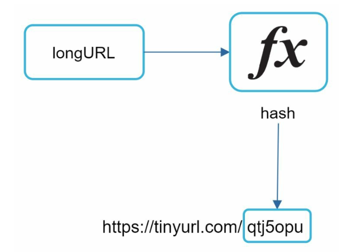
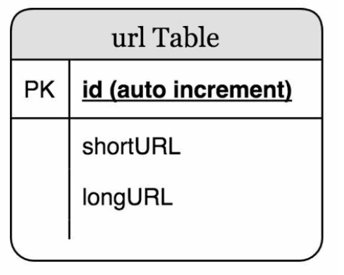
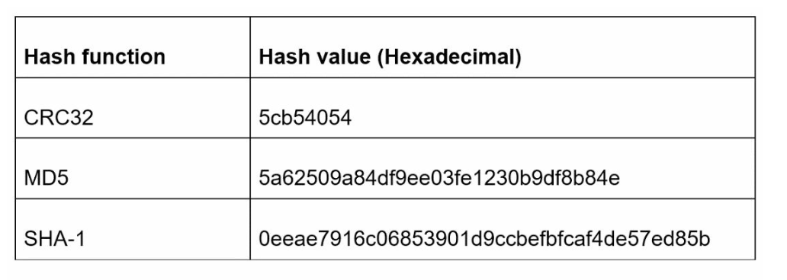
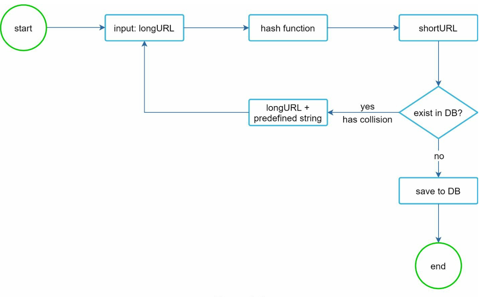
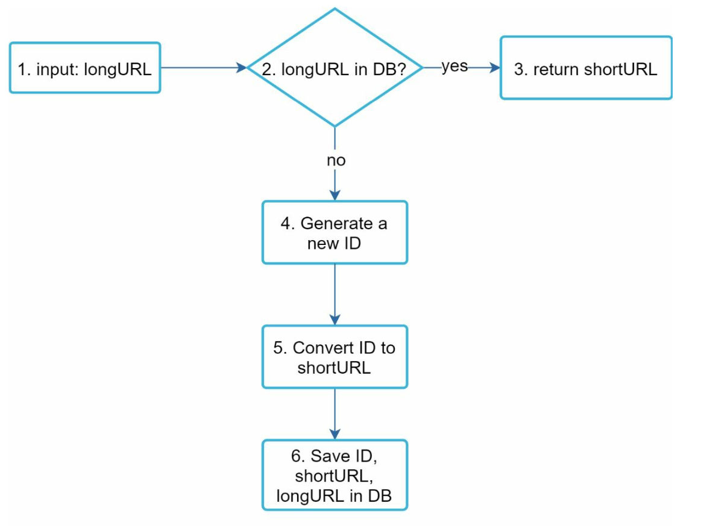
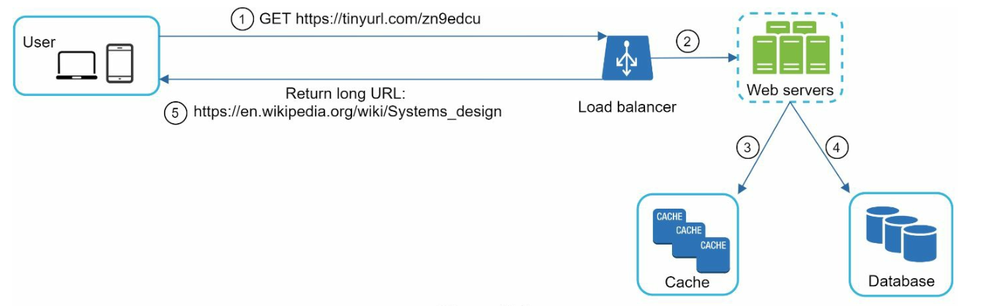

Design a URL Shortener
TinyURL jaisa service: 100M URLs/day ka estimate, 301 vs 302, hash+collision vs base62 aur cache-first redirect flow.
Introduction
Classic interview question: TinyURL jaisa URL shortener design karo. Chhota lagta hai, lekin isme estimation, API design, HTTP semantics (301 vs 302), hashing vs ID generation, caching aur read-heavy scaling — sab aata hai.
Step 1: Problem samjho aur scope
Clarification conversation se:
- Example:
https://www.systeminterview.com/q=chatsystem&c=loggedin&v=v3&l=long→https://tinyurl.com/y7keocwj. Short URL click → original pe redirect. - Traffic: 100 million URLs/day generate.
- Short URL jitna chhota ho sake.
- Characters:
[0-9, a-z, A-Z]— 10 + 26 + 26 = 62. - Short URLs delete/update nahi kar sakte (simplicity ke liye).
Basic use cases
- URL shortening: long URL → much shorter URL.
- URL redirecting: short URL → original URL pe redirect.
- High availability, scalability, fault tolerance.
Back-of-the-envelope estimation
Write ops : 100M URLs/day
Write QPS : 100M / 24 / 3600 ≈ 1,160
Read QPS : read:write = 10:1 ≈ 11,600
10 years : 100M × 365 × 10 = 365 billion records
Avg URL length : 100 bytes (assume)
Storage : 365B × 100 bytes = 365 TB over 10 yearsStep 2: High-level design
API endpoints
REST style, do endpoints:
1) URL shortening
POST api/v1/data/shorten
request : { "longUrl": "longURLString" }
return : shortURL
2) URL redirecting
GET api/v1/shortUrl
return : longURL for HTTP redirectionURL redirecting: 301 vs 302

https://tinyurl.com/qtj5opu (GET). Red box 2: Status Code: 301. Red box 3: response header location = asli long Amazon URL. Browser 301 dekh ke turant location wale URL pe chala jaata hai.Server short URL ki request pe long URL ko HTTP 301 ya 302 response ke Location header mein bhejta hai.
| 301 Moved Permanently | 302 Found (temporary) | |
|---|---|---|
| Meaning | URL "permanently" long URL pe move ho gaya | "Temporarily" long URL pe moved |
| Browser caching | Browser response cache karta hai; next requests shortener service tak jaati hi nahi | Har request pehle shortener service pe aati hai, phir redirect |
| Kab use karein | Server load kam karna priority hai | Analytics important hai — click rate, source track karna |
Implementation sabse simple: hash table <shortURL, longURL>. Short URL se long URL lo, redirect karo.
longURL = hashTable.get(shortURL)
→ HTTP 301/302, Location: longURLURL shortening

qtj5opu jo https://tinyurl.com/ ke baad lagta hai. Short URL format: www.tinyurl.com/{{hashValue}}.Hash function ki requirements:
- Har longURL ek hashValue mein hash ho.
- Har hashValue wapas longURL pe map ho sake.
Step 3: Design deep dive
Data model
High-level mein sab hash table mein tha — lekin real system mein memory limited aur mehengi. Better: <shortURL, longURL> mapping relational database mein.

shortURL pe unique index aur longURL pe index (dedup lookup ke liye) chahiye.Hash value length
hashValue mein [0-9, a-z, A-Z] = 62 characters. Smallest n dhoondo jisme 62n ≥ 365 billion:
| n | Max URLs (62n) |
|---|---|
| 6 | ~56.8 billion — kaafi nahi |
| 7 | ~3.5 trillion — 365 billion se bahut zyada ✅ |
To hashValue ki length = 7. Do approaches: hash + collision resolution aur base 62 conversion.
Approach 1: Hash + collision resolution
Well-known hash functions (CRC32, MD5, SHA-1) se long URL shorten karo:

https://en.wikipedia.org/wiki/Systems_design) ke liye teen hash functions ke hexadecimal outputs: CRC32 → 5cb54054 (8 chars), MD5 → 32 chars, SHA-1 → 40 chars. Sabse chhota bhi 7 se lamba hai — isliye truncate karna padega.Pehle 7 characters le lo — lekin isse collisions ho sakte hain. Fix: collision mile to long URL ke saath ek predefined string append karke dobara hash, jab tak collision khatam na ho.

Ye collision hata deta hai, lekin har request pe DB query karke shortURL check karna expensive hai. Bloom filter performance improve kar sakta hai — space-efficient probabilistic technique jo batata hai ki element set ka member hai ya nahi ("definitely no" ya "maybe yes").
Approach 2: Base 62 conversion
Base conversion URL shorteners ka common approach hai. Ek number ko alag representation (base) mein convert karna. Base 62 kyunki hashValue ke liye 62 possible characters hain. Mapping: 0-0, ..., 9-9, 10-a, 11-b, ..., 35-z, 36-A, ..., 61-Z.
Example: 11157 (base 10) → base 62
11157 = 2 × 62² + 55 × 62¹ + 59 × 62⁰
= [2, 55, 59] → [2, T, X] → "2TX"
Short URL: https://tinyurl.com/2TX
Notes ka example: ID 2009215674938 → "zn9edcu" (7 chars)// Java
static final String B62 = "0123456789abcdefghijklmnopqrstuvwxyzABCDEFGHIJKLMNOPQRSTUVWXYZ";
static String encode(long id) {
StringBuilder sb = new StringBuilder();
do { sb.append(B62.charAt((int)(id % 62))); id /= 62; } while (id > 0);
return sb.reverse().toString();
}Dono approaches ka comparison
| Hash + collision resolution | Base 62 conversion |
|---|---|
| Short URL length fixed | Length fixed nahi — ID ke saath badhti hai |
| Unique ID generator nahi chahiye | Unique ID generator chahiye (Chapter 07) |
| Collision possible — resolve karna padta hai | Collision possible nahi (ID unique hai) |
| Next available short URL nikalna possible nahi (ID pe depend nahi) | ID +1 badhta ho to next short URL guess karna easy — security concern |
2TX, 2TY, 2TZ... crawl karke saare (shayad private) long URLs dekh sakta hai. Mitigation: Snowflake-style non-sequential IDs, ID ko reversible bit-shuffle/encrypt (e.g. Feistel) karke encode karna, aur private links pe auth.URL shortening deep dive
Base 62 approach use karte hain (simpler, no collisions):

Concrete example: input https://en.wikipedia.org/wiki/Systems_design, ID generator ne 2009215674938 diya → base 62 → zn9edcu → DB row (2009215674938, zn9edcu, https://en.wikipedia.org/wiki/Systems_design).
Distributed unique ID generator (Snowflake jaisa) chahiye taaki globally unique IDs milein — single DB ka auto_increment scale nahi karega.
URL redirecting deep dive
Reads writes se 10x zyada hain, isliye <shortURL, longURL> mapping cache mein.

GET https://tinyurl.com/zn9edcu. 2. Load balancer request Web servers ko forward karta hai. 3. shortURL cache mein hai to longURL seedha return. 4. Cache miss → Database se fetch (DB mein bhi nahi = user ne invalid short URL diya). 5. longURL (https://en.wikipedia.org/wiki/Systems_design) user ko return (301/302).Step 4: Wrap-up — extra talking points
- Rate limiter: malicious user bahut saari shortening requests bhej sakta hai. IP address ya filtering rules se limit (Chapter 04).
- Web server scaling: web tier stateless hai → servers add/remove easy.
- Database scaling: replication aur sharding.
- Analytics: data ka business mein importance badh raha hai. Analytics solution integrate karke — kitne log click karte hain, kab click karte hain — insights (302 redirect isme help karta hai).
- Availability, consistency, reliability: bade system ki success ke core concepts — Chapter 01 mein detail.
- Scope + estimate 3 min mein: 100M/day writes → ~1.2K WQPS, ~11.6K RQPS, 365B records, 365TB, 7 chars.
- Do APIs + 301 vs 302 decision with reason ("analytics chahiye to 302").
- Hash+collision vs base62 table bolo, base62 + Snowflake choose karo.
- Do flows draw karo (shortening + redirecting), cache ko redirect path pe.
- Deep dive options: enumeration security, hot links, custom aliases, expiry, sharding by short code.
Common follow-up questions
Same long URL do baar aaye to same short URL?
Flow mein step 2 dedup karta hai (longURL index). Lekin per-user analytics chahiye to har user ko alag short URL dena bhi valid choice hai — requirement pe depend.
Custom alias (tinyurl.com/my-sale) kaise?
Alias ko shortURL column mein directly insert karo with unique constraint; conflict → user ko error. Generated codes aur aliases ka namespace overlap avoid karne ke liye alias min length ya prefix rule.
DB ko shard kaise karoge?
Redirect read path short code se aata hai, isliye shard key = shortURL (ya ID) ka hash. longURL dedup ke liye alag lookup table/index chahiye hoga, ya dedup ko best-effort maan lo.
Expired links?
expires_at column, cache TTL usse chhota, aur background job cleanup. Expired pe 404/410.
- URL Shortener — KGS, Token Ranges, Cleanup & Analytics — Alex Xu wale chapter ke upar extra angles: PUT idempotent kyun, Key Generation Service ke 3 tareeke (random, h
- Pastebin System Design — Metadata vs Content Split — URL shortener jaisa skeleton, par content bada: metadata SQL mein, paste text object storage mein, CDN, paste-
Key Takeaways
- 100M URLs/day → ~1,160 write QPS, ~11,600 read QPS, 365B records, ~365 TB / 10 saal.
- 627 ≈ 3.5 trillion → 7-character short code kaafi.
- 301 = browser cache, kam load; 302 = har click server pe, analytics possible.
- Base 62 + distributed unique ID generator: no collisions, lekin sequential IDs guessable.
- Hash + collision resolution: fixed length, lekin DB/Bloom filter check chahiye.
- Read-heavy → cache-first redirect path; rate limiter, stateless web tier, sharded DB, analytics.